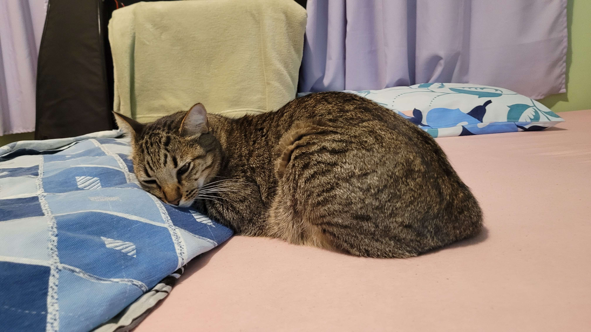
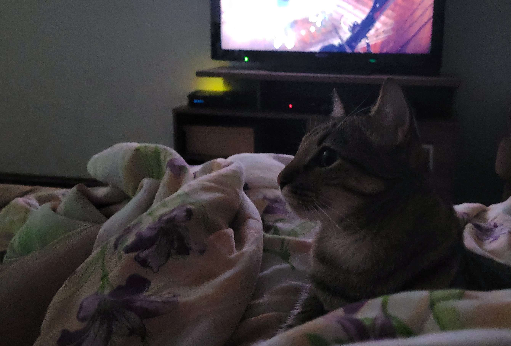
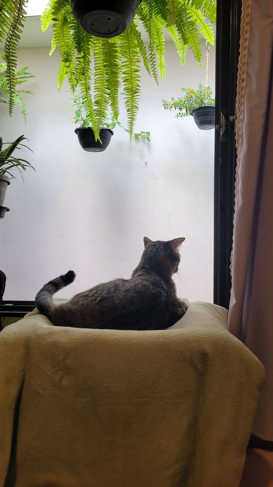
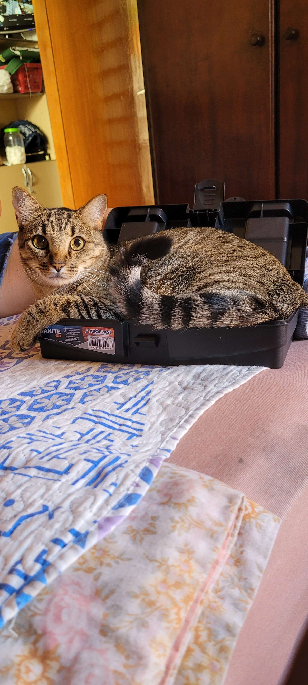
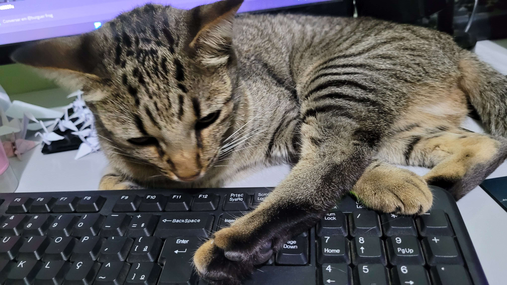

Niko studied at the University of Cuteness and Fluffiness in Catifornia, obtaining his Ownt degree at the age of 22 hours of life.
He completed his master's degree in Fur Coloration at the age of 1 week, studying in depth the topic "bicolor cat whiskers" at the same University from which he graduated.
At the moment, Niko is studying at the University of Kind Animals, in Nepaw, working on his doctorate which focuses on the study of "undercoat and huggability level", at the age of 3, and does not intend to stop his studies there.
Because the passage of time is relative even for humans, let alone cats, Nikon was unable to place his great achievements and the dates of his diplomas according to the Gregorian calendar.
It is important to realize the fact that all of Niko's achievements occurred between September 9, 2021 and the present. As little time as it may seem to the ignorant eyes of human beings, Niko is already considered a young adult among cats. His achievements are considerable, and greatly admired by those who wish to follow the same path as Niko.
Niko completed several internships in the area of Feline Cuteness, including at the renowned company Tired Cat and also at the company Hungry Cats. He also worked at the Successful Mini-Felines Company as a professional couch potato and was promoted to official sleeper.
Niko's responsibilities in all of his previous job positions consisted of being friendly, sleeping 10 hours longer than humans, shedding large amounts of fur, and deeply studying humans' reactions to his behaviors. Throughout his years of work, Niko has documented moments that represent his specialty:
    You can contact Niko's Assistant via the information for contact.
If you want to know a little bit more about Niko's assistant and her lovely work, you can click here to access her inicial portfolio.